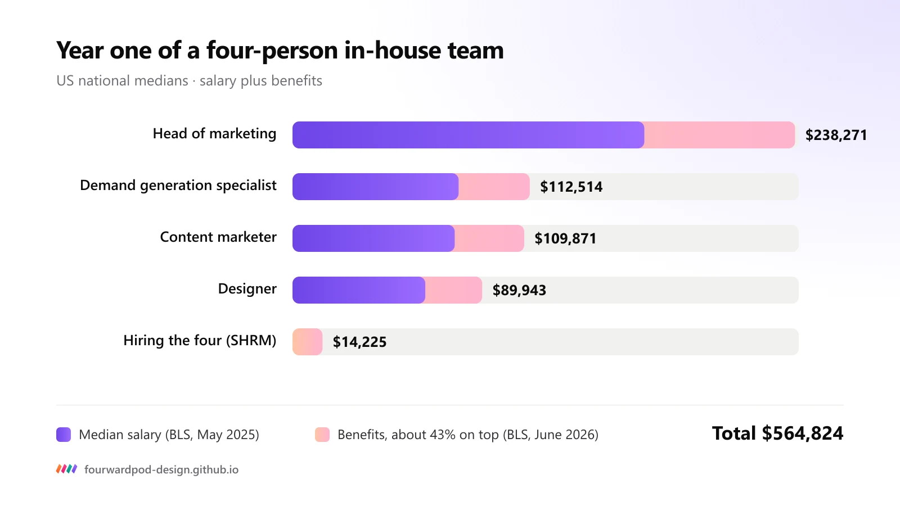

On this page
If you run marketing at a B2B SaaS company, you will face this choice: build an in-house marketing team, or hire an agency. Both can work. They cost different amounts, start at very different speeds and fail in different ways.
This guide puts real numbers on the in-house marketing vs agency decision, using US salary data from the Bureau of Labor Statistics and hiring benchmarks from SHRM. It also covers the options most comparisons skip: a fractional CMO, freelancers and an embedded senior team.
Fourward publishes this guide. We are an embedded senior marketing team for B2B SaaS, one of the five options compared here. Every cost figure below comes from public data and links to its source.
- A four-person in-house team costs about $565,000 in year one at US national medians, before tools and ad spend. Agencies, fractional CMOs and embedded teams price by scope, so compare their quotes with that number, not with one salary.
- In-house hiring is slow: each role takes about a month and a half to fill. An agency or embedded team starts as soon as the plan is agreed.
- In-house teams win on product context and control. Agencies and fractional leaders win on range and speed, but their context leaves when the contract ends.
- 2026 changes the skills list: Google's AI Overviews reach 2.5 billion people a month, so whichever model you choose needs SEO, GEO and AEO, not just ads and content.
In-house vs agency vs fractional CMO vs freelancers at a glance
Five ways to staff B2B SaaS marketing, compared on the same seven questions. Scroll the table sideways on a phone.
| In-house team | Agency | Fractional CMO | Freelancers | Embedded senior team | |
|---|---|---|---|---|---|
| Who sets strategy | Your head of marketing | You, or the agency's strategist on larger retainers | The fractional CMO, part-time | You | The team's senior marketers, with you |
| Who does the work | Your hires | The agency's staff, shared across clients | Your team or vendors the CMO directs | Each freelancer, task by task | The same senior team that sets strategy |
| Time to start | About a month and a half per role to hire | After scoping and onboarding | After scoping | Days, for a single task | After a call, a free audit and a written plan |
| How it's priced | Salaries, plus about 43% for benefits | Monthly retainer or project fee | Days or hours each month | Hourly or per project | Monthly retainer, for months or years, or a fixed project |
| Skills you get | One or two channels per hire | One channel to full service, by agency | Leadership and strategy | One skill per freelancer | Search, AI visibility, PR, lifecycle and events |
| Who keeps the knowledge | You, while people stay | The agency, when the contract ends | The CMO; documents stay with you | Each freelancer | You, in one plan with weekly written updates |
| Main risk | Slow to build; costly if a hire is wrong | Junior staff on your account | A plan with no hands to run it | You become the project manager | A smaller bench than a large agency |
An in-house team gives you the deepest context and full control, at the highest fixed cost. An agency gives you range and speed, with less context. The other three options split the difference: a fractional CMO brings strategy, freelancers bring hands, and an embedded team brings both.
What an in-house B2B SaaS marketing team costs in 2026
Start with the option most founders picture first. A lean B2B SaaS marketing team covers four roles: a head of marketing, a content marketer, a demand generation specialist and a designer. Here is what each costs at the US national median.
| Role | BLS occupation | Median salary, May 2025 | With benefits |
|---|---|---|---|
| Head of marketing | Marketing managers | $166,790 | $238,271 |
| Content marketer | Writers and authors | $76,910 | $109,871 |
| Demand generation specialist | Market research analysts and marketing specialists | $78,760 | $112,514 |
| Designer | Graphic designers | $62,960 | $89,943 |
| Hiring the four | SHRM median cost per hire, one executive and three staff | $14,225 | |
| Year one | $385,420 | $564,824 |

Benefits add the most on top of salaries. They make up 30% of what US private employers spend on each worker, so every $1 of salary costs about $1.43. Counting the head of marketing as an executive hire, the four hires add $14,225 in recruiting costs.
That gives about $565,000 for year one, before software, ad spend, recruiter fees and the months a new team needs to find its feet. These are national medians across every industry, so half the people in each occupation earn more.
Few companies have that budget spare. Even at large companies, marketing budgets stayed flat at 7.8% of company revenue in 2026, and 56% of CMOs lack the budget to deliver this year's strategy.
An in-house team is a fixed cost of about $565,000 a year before it ships anything. An agency or embedded team turns that into a variable cost you can scale up or down, which matters most while budgets stay flat.
How agencies, fractional CMOs and freelancers charge
None of the outside options publish one standard price, because each is priced to scope. What changes is what you are paying for.
- Agency: a monthly retainer for ongoing work, or a fee per project. The price follows the channels covered, the output each month and how senior the people on your account are. Agencies range from single-channel specialists, such as a paid search or PR firm, to full-service shops.
- Fractional CMO: a senior marketing leader who works part-time for several companies, billed by days or hours a month. You buy strategy and leadership. The work itself still needs hands: your team, an agency or freelancers.
- Freelancers: paid by the hour or the project. They are the cheapest per task, and you manage the brief, the deadlines and the quality yourself.
- Embedded senior team, also called a marketing pod: a monthly retainer that can run for years, or a fixed-scope project. At Fourward, the price comes with a written 30-day plan, within three working days of a call.
To compare fairly, price the same output over twelve months. A retainer that looks expensive next to one salary is often cheap next to four salaries, benefits and the management time it takes to run them.
In-house costs are salaries you carry whether marketing works or not. Agency, fractional and embedded-team costs follow scope, so you pay for the output you choose and can change it.
How fast each option gets marketing moving
Hiring is the slow part of building in-house. The median time to fill a role is about a month and a half, for staff and executive roles alike. Hire four people one after another and the team takes about six months to complete. Hire them in parallel and you still wait about six weeks for accepted offers, then notice periods and onboarding.
Outside options start once the scope is agreed. A freelancer can start a single task within days. An agency or fractional CMO starts after scoping and onboarding. At Fourward, the path is one call, a free audit, a written 30-day plan within three working days, and then kickoff.
In-house hiring takes at least a month and a half per role, and about six months if you hire one after another. An agency or embedded team starts in weeks, which matters when pipeline targets are quarterly.
The 2026 factor: AI search changes the skills you need
B2B buyers now start their research with AI. Generative AI search is the starting point for B2B buyers, who then check what they find with colleagues and trusted outside voices. A typical buying decision now involves 13 internal stakeholders and nine external influencers.
Google's AI Overviews reach more than 2.5 billion people a month, and AI Mode more than 1 billion. When an AI summary appears, people click a traditional search result on 8% of visits, against 15% without one.
So your marketing has to be quoted inside the answer, not just ranked below it. That takes three skills:
- SEO: getting your pages found and ranked in Google.
- GEO (generative engine optimization): getting your brand cited by ChatGPT, Perplexity, Gemini and Google's AI Overviews.
- AEO (answer engine optimization): writing pages that answer buyer questions directly, so AI tools lift your answer.
In an in-house team, these skills have to be hired or learned. With an agency or embedded team, they come with the people you bring in.
An in-house team built in 2026 needs AI search skills on day one, so you hire for them or train for them. An agency or embedded team that already runs SEO, GEO and AEO brings them from the start.
Free check. 30 checks, one score out of 100, under a minute.
Control, context and what you keep
Cost and speed are only half the decision. The other half is who understands your product, and what stays with you when people move on.
- In-house team: the deepest product knowledge and the fastest internal feedback loops. When a person leaves, their knowledge leaves with them.
- Agency: broad experience across clients, but context builds slowly, and it leaves with the contract.
- Fractional CMO: senior judgement on a part-time schedule. Decisions are only as fast as the hours you buy.
- Freelancers: you hold all the context and all the coordination.
- Embedded senior team: one team works from one plan and one weekly cadence. You get a baseline report, a written update every week, a review call every two weeks and a full report every month.
In-house wins on context, agencies on range. Whichever you pick, insist that the plan and the data live with you, so nothing is lost when people or contracts change.
In-house or agency: which fits your stage
Match the model to the problem you have today, not the team you want in three years.
| Your situation | Best fit | Why |
|---|---|---|
| The founders still sell and the message keeps changing | Freelancers, with the founders steering | Low fixed cost while you find what works |
| One channel already works and you want more of it | Specialist agency | Depth in that one channel, priced to scope |
| You have people doing the work but nobody owns the plan | Fractional CMO | Senior strategy without a full-time salary |
| You want the whole department, now and for the long run | Embedded senior team | Strategy and execution from one senior team, already assembled |
| Marketing is core and you can fund a team for the long run | In-house team | The deepest context and full control |
You can also mix models. A head of marketing in-house with an agency or embedded team for execution gives you an owner inside the company and a full set of skills outside it.
Five questions that settle it
- Do you know which channel works? If yes, scale it with a specialist. If not, you need range before depth.
- Who owns the plan day to day? If nobody does, start with strategy: a fractional CMO or an embedded team.
- Can you fund salaries plus about 43% in benefits for at least a year? If not, an in-house team will be cut before it pays back.
- How soon do you need pipeline? If this quarter, you can't wait a month and a half for each hire.
- Does anyone cover SEO, GEO and AEO? If not, that skill gap shapes the choice more than cost does.
Pick in-house when you want every marketer on your payroll, an agency when one channel needs scale, and an embedded team when you want the whole department running within weeks and kept for as long as you need it.
Another option: a senior marketing team that works as yours
An embedded senior team, often called a marketing pod, combines the strategy of a fractional CMO with the hands of an agency. It works from your plan, not a template, and stays as long as you need it, from one project to a retainer that runs for years.
Fourward is one senior marketing team for B2B SaaS. We ran search, brand, lifecycle and events side by side in one B2B SaaS growth team, and now run them for yours, as one team on one plan:
- Search, content and AI visibility: SEO and technical SEO, GEO and AEO, comparison pages, website and CRO.
- Brand, PR and partnerships: positioning, media relations, thought leadership, online reputation management, LinkedIn and social.
- Lifecycle and demand generation: HubSpot, email workflows, newsletters, webinars, ABM and funnel reporting.
- Field marketing and events: executive dinners, partner events and follow-up within the week.
What that looks like in practice: comparison pages built for the "X vs Y" questions buyers ask AI first, archives consolidated so every page that stays earns more, and follow-up that reaches sales within the week.
An in-house team gives you ownership and an agency gives you capacity. An embedded senior team gives you both from day one, for one project or for years, at a cost that follows scope.
A full SEO, AEO and GEO audit, plus 30 minutes with our team to walk you through it.
FAQs
Is it cheaper to hire an agency than an in-house marketing team?
It depends on scope, so compare like with like. A four-person in-house team costs about $565,000 in year one at US national medians, before tools and ad spend. Set an agency's or embedded team's quote for the same output against that number, not against one salary.
When should a B2B SaaS company build an in-house marketing team?
When marketing is core to how you win, you know which channels work, and you can fund a team and its leader for the long run. Until then, a head of marketing in-house with outside help for execution keeps fixed costs low.
What is the difference between a fractional CMO and a marketing agency?
A fractional CMO is a part-time senior leader who sets strategy and directs the work. An agency does the work. You can pair the two, or choose an embedded senior team that covers both.
How long does it take to hire a marketing team?
The median time to fill a role is about a month and a half, for staff and executive roles alike. Add notice periods and onboarding, and a four-person team hired one after another takes about six months to complete.
Do B2B SaaS companies need GEO and AEO in 2026?
Yes. Generative AI search is now where B2B buyers start, Google's AI Overviews reach more than 2.5 billion people a month, and people click fewer links when an AI summary appears. Being cited inside the answer now matters as much as ranking below it.
Can an agency and an in-house team work together?
Yes. Keep an in-house owner for strategy and brand, and bring in an agency or embedded team for execution. It works best when the plan and the data live with you.
Sources
- Advertising, Promotions, and Marketing Managers, Occupational Outlook Handbook, U.S. Bureau of Labor Statistics (median pay, May 2025).
- Writers and Authors, Occupational Outlook Handbook, U.S. Bureau of Labor Statistics.
- Market Research Analysts, Occupational Outlook Handbook, U.S. Bureau of Labor Statistics.
- Graphic Designers, Occupational Outlook Handbook, U.S. Bureau of Labor Statistics.
- Employer Costs for Employee Compensation, June 2026, U.S. Bureau of Labor Statistics.
- 2025 Recruiting Executives Benchmarking data brief, SHRM (time to fill and cost per hire).
- 2026 CMO Spend Survey, Gartner, May 2026.
- The State Of Business Buying, 2026, Forrester, January 2026.
- Google I/O 2026 opening keynote, Google, May 2026.
- Google users are less likely to click on links when an AI summary appears in the results, Pew Research Center, July 2025.